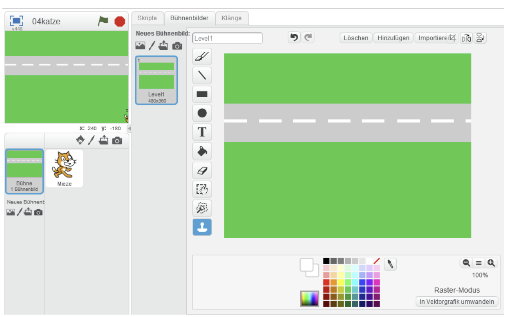
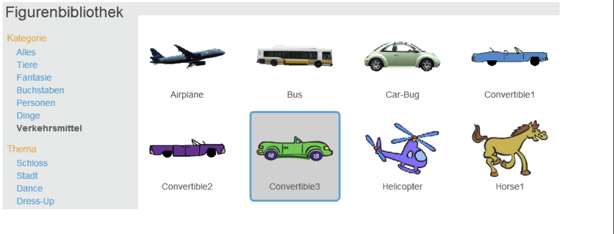
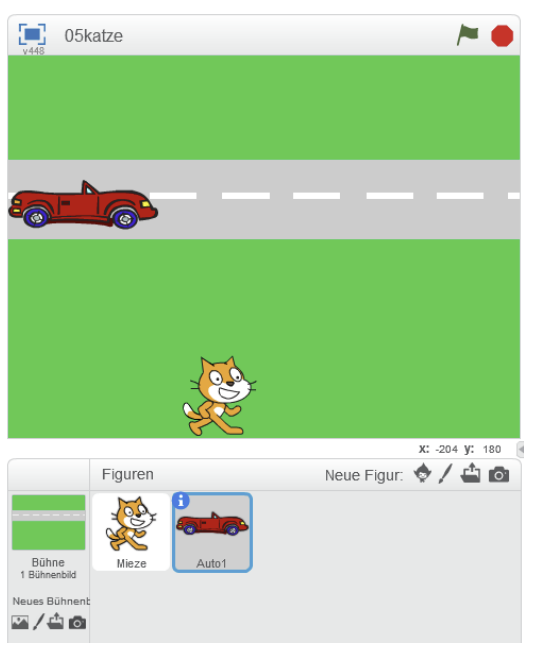
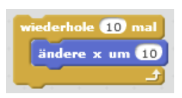
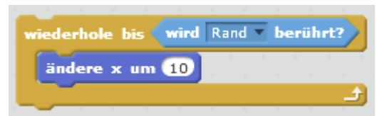
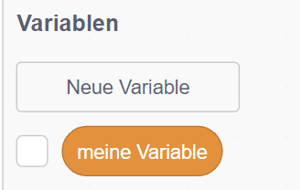

Jetzt bekommst du einen kurzen Überblick und startest sicher in die Aufgaben.
Überblick
In diesem Kurs lernst du Schritt für Schritt die Scratch-Oberfläche kennen, programmierst
erste Bewegungen und arbeitest mit Figuren, Kostümen und dem Malstift. Am Ende kannst du
eigene kleine Programme schreiben und erklären.
So arbeitest du hier
Lies dir alles genau durch und bearbeite die Aufgaben direkt auf der Seite.
Schließe die Seite nicht und lade sie nicht neu, damit deine Antworten erhalten bleiben.
Du wirst auch parallel das Programm Scratch benutzen. Dafür wechsle zwischen Scratch und dieser
Seite über die Symbole in der Menüleiste, schließe Programme nie mit dem X.
Wichtig:
Zum Schluss gebe deinen Namen links unten ein und klicke auf summary & submit. Deine Daten werden an deine Lehrerin übertragen und eine txt Datei auf deinen Computer heruntergeladen. Diese Datei kannst du auch in
OneNote einfügen.
Teil E: Die Katze läuft über die Straße
Jetzt lernst du, wie du den Hintergrund,die Bühne, gestaltest und ein erstes Auto als neues Objekt anlegst.
Schritt für Schritt
Arbeite die Schritte nacheinander ab. So kannst du leicht folgen.
Öffne dein Projekt 03katze und speichere es als 04katze.
Öffne den Zeicheneditor der Bühne. das machst du oben links bei dem Pinsel und Bühnenbilder.
Zeichne eine Straße und färbe die Umgebung grün.
Gib dem Bühnenbild den neuen Namen Level1.
Lege eine neue Figur an: ein erstes Auto. Du kannst es selbst zeichnen oder aus der Bildbibliothek wählen.

Warum das wichtig ist
Jetzt lernst du, dass der Hintergrund nicht nur Deko ist, sondern ein Teil deines Spiels. Mit einem neuen Objekt wie dem Auto wird dein Projekt lebendiger.
Teste nun dein Wissen
Lückentext: Die wichtigsten Begriffe
Mini-Spiel: Schritte richtig ordnen
Jetzt lernst du, die Schritte logisch zuzuordnen.
Ziehe ein linkes Teil auf das passende rechte Teil oder umgekehrt.
Schritt
Projekt speichern als 04katze
Bühne gestalten
Neues Objekt anlegen
Ergebnis
Du arbeitest in einer neuen Datei
Straße und Grünfläche sind sichtbar
Ein Auto erscheint als neue Figur
Gelöst
Schreibe nach
Teste nun dein Wissen und denke weiter: Wie könnte dein Auto später über die Straße fahren?
Teil F: Ein Auto fährt vorbei
Jetzt lernst du, wie du ein neues Objekt anlegst und es mit Schleifen über die Straße fahren lässt.
Schritt für Schritt
Arbeite die Schritte nacheinander ab. So kannst du alles sicher nachvollziehen.
Wähle ein Auto als neue Figur aus der Bibliothek.
Setze das Auto auf die Straße und gib ihm einen passenden Namen.
Öffne das Kostümfenster und ändere die Farbe, wenn du möchtest.
Programmiere das Auto: Beim Klick auf die grüne Fahne soll es losfahren.
Bewege das Auto nach rechts, indem du die x-Koordinate änderst.
Nutze eine Schleife, damit die Bewegung mehrfach passiert.


Schleifen verstehen
Jetzt lernst du zwei wichtige Schleifen: wiederhole 10 mal und wiederhole bis. Damit fährt dein Auto Schritt für Schritt nach rechts.


Aufträge zur Schleife
Jetzt lernst du die Schleifen noch genauer kennen und testest sie Schritt für Schritt.
Probiere die Schleife wiederhole 10 mal aus. Ziehe „ändere x um …“ in die Schleife und lass das Auto 10‑mal nach rechts fahren.
Teste wiederhole bis. Nutze unter Fühlen die Bedingung „wird Rand berührt“ und wähle Rand aus.
Überlege: Was passiert, wenn das Auto den linken Rand berührt? Beobachte die Wirkung.
Formuliere den Ablauf in Worten: „Falls das Auto rechts aus dem Bild gefahren ist, soll es links wieder erscheinen.“
Setze das als Verzweigung in einer Endlosschleife wiederhole fortlaufend um.
Tipp:
Für Bedingungen brauchst du oft Operatoren wie > und <. Schau auch in der Blockpalette bei Operatoren nach.
Teste nun dein Wissen
Lückentext: Begriffe festigen
Mini-Spiel: Schritte zuordnen
Jetzt lernst du, die Schritte und ihre Wirkung zu verbinden.
Ziehe ein linkes Teil auf das passende rechte Teil (oder umgekehrt).
Schritt
Auto aus der Bibliothek wählen
x-Koordinate ändern
wiederhole 10 mal
wiederhole bis Rand berührt
Ergebnis
Eine neue Figur erscheint
Das Auto fährt nach rechts
Die Bewegung passiert genau 10mal
Das Auto fährt bis zum Rand
Gelöst
Transfer: Denken wie ein Programmierer
Jetzt lernst du, eine Idee in Worte zu fassen und dann zu programmieren.
Teil G: Das Auto ändert die Geschwindigkeit
Jetzt lernst du, wie du mit einer Variable die Geschwindigkeit steuerst und sie mit Tasten veränderst.
Schritt für Schritt
Arbeite die Schritte nacheinander ab. So behältst du den Überblick.
Öffne die Datei 04katze und speichere sie als 06katze.
Lege in der Blockpalette unter Daten eine Variable Schrittweite an.
Setze Schrittweite beim Start auf 10. überlege: Was bedeutet die 10 für die Bewegung?
Ersetze die feste Zahl bei ändere x um 10 durch die Variable Schrittweite.
Lege zwei Tasten fest: eine macht Schrittweite größer, die andere kleiner.

Verbesserungen
Jetzt lernst du, Grenzen zu setzen, damit das Auto nicht zu schnell oder rückwärts fährt.
Erhöhe Schrittweite nur, wenn Schrittweite < 20 ist.
Verringere Schrittweite nur, wenn Schrittweite > 5 ist.
Speichere die verbesserte Version als 06katzeV2.
Logische Verknüpfungen
Jetzt lernst du die Operatoren und, oder und nicht ganz genau:
und: Beide Bedingungen müssen stimmen. Beispiel: Taste x gedrückt und Schrittweite < 20.
oder: Mindestens eine Bedingung reicht. Beispiel: Taste x oder Taste c gedrückt.
nicht: Die Bedingung ist falsch. Beispiel: nicht Rand berührt.
Wir hängen zwei neue Verzweigungen an die Endlosschleife wiederhole fortlaufend:
Wenn Taste x gedrückt wird und Schrittweite < 20, dann erhöhe Schrittweite.
Wenn Taste c gedrückt wird und Schrittweite > 5, dann verringere Schrittweite.
So bleibt die Geschwindigkeit im sicheren Bereich, und das Auto fährt nicht rückwärts oder zu schnell.
Merke:
Mit und verknüpfst du zwei Bedingungen in einem Wenn-Block. Nur wenn beide stimmen, wird der Block ausgeführt.
Teste nun dein Wissen
Lückentext: Variable und Logik
Mini-Spiel: Schritt und Wirkung
Jetzt lernst du, Schritte und Ergebnisse richtig zuzuordnen.
Ziehe ein linkes Teil auf das passende rechte Teil (oder umgekehrt).
Schritt
Variable Schrittweite anlegen
Schrittweite beim Start auf 10 setzen
x um Schrittweite ändern
Grenzen Schrittweite < 20 und Schrittweite > 5
Ergebnis
Neue Datenblöcke erscheinen
Die Startgeschwindigkeit ist festgelegt
Das Auto fährt je nach Schrittweite schneller oder langsamer
Die Geschwindigkeit bleibt im sicheren Bereich
Gelöst
Transfer-Aufgabe
Teste nun dein Wissen und denke weiter: Welche Tasten würdest du wählen und warum?
Teil H: Die Katze muss aufpassen
Jetzt lernst du, was beim Zusammenstoß von Auto und Katze passieren soll, und wie du dein Spiel erweiterst.
Schritt für Schritt
Arbeite die Schritte nacheinander ab. So kannst du alles sicher nachvollziehen.
Öffne dein Projekt 06katze und speichere es als 07katze.
Teste dein Spiel: Was passiert gerade, wenn das Auto die Katze berührt?
Baue eine Bedingung ein: Wenn Auto die Katze berührt, dann stoppe das Auto.
Starte das Programm und prüfe, ob das Auto wirklich hält.
Jetzt lernst du aus Beispielen: Vergleiche deine Lösung mit der Hilfekarte.
Aufträge zum Spielausbau
Jetzt lernst du, dein Spiel spannender zu machen. Die Aufgaben sind unabhängig voneinander.
Überlege dir, was passieren soll, wenn die Katze angefahren wird. Setze deine Idee um.
Lasse ein weiteres Auto fahren und programmiere alles für die Kollision mit der Katze.
Baue einen Zähler ein, der mitzählt, wie oft die Katze heil oben angekommen ist.
Gib der Katze eine bestimmte Anzahl Leben (zum Beispiel sieben). Wenn alle Leben weg sind, endet das Spiel.
Erweitere dein Spiel um weitere Level, die immer schwieriger werden. Lege neue Bühnenbilder an und wechsle zum nächsten Level, wenn die Katze oben ankommt.
Füge ein Level mit Fluss ein, auf dem Baumstämme schwimmen. Die Katze muss darauf springen, um rüber zu kommen.
Tipp:
Objekte können sich Nachrichten schicken und darauf reagieren. Die Blöcke findest du unter Ereignisse. Gib den Nachrichten sinnvolle Namen, damit du später noch weißt, wozu sie gut sind.
Teste nun dein Wissen
Warum Nachrichten?
Lückentext: Wichtige Begriffe
Mini-Spiel: Schritt und Wirkung
Jetzt lernst du, Schritte und Ergebnisse richtig zuzuordnen.
Ziehe ein linkes Teil auf das passende rechte Teil (oder umgekehrt).
Schritt
Projekt als 07katze speichern
Wenn Auto Katze berührt, Auto stoppen
Nachricht senden
Zähler für Erfolge einbauen
Ergebnis
Du arbeitest in einer neuen Datei
Das Auto hält bei der Kollision
Andere Figuren reagieren auf ein Signal
Erfolgreiche Überquerungen werden gezählt
Gelöst
Transfer: Dein eigenes Spiel
Teste nun dein Wissen und denke weiter: Wie würdest du das Spiel spannender machen?
Hilfekarte F
Hier findest du die Erklärung zur Lösung von Teil F.
Ergebnis und Erklärung
Schleifenblock: Durch "wiederhole fortlaufend" wird der Inhalt des Schleifenblocks so lange ausgeführt, bis das Programm beendet wird. Diese Schleife nutzen wir, weil das Auto dauerhaft fahren soll.
Würden wir nur "ändere x um 10" in die Schleife ziehen, würde das Auto immer weiter nach rechts aus der Bühne fahren bis es am Rand hängen bleibt.
Verzweigungsblock: Damit das Auto nur fährt, solange es noch nicht am rechten Rand ist, ziehen wir einen Verzweigungsblock in die Schleife. Ist die Bedingung erfüllt, wird der obere Teil ausgeführt. Ist sie nicht erfüllt, läuft der Teil nach "sonst".
Sinnvoll ist hier die Bedingung: x-Position < rechter Rand. Falls ja, fährt das Auto -> ändert x um 10. Falls nein, wird es links wieder abgesetzt.